User Manual ( Bangla Version )
সূচিপত্র
ভূমিকা
দেশের হ্মুদ্রঋণ কার্যক্রমকে আরও গতিশিল স্বচ্ছ ও যুগপোযোগি করতে টি এম এস আইমাইক্রপ iMikrof সফটওয়ার নামে একটি অনলাইন সফটওয়ার তৈরি করেছে যা হ্মুদ্রঋণ কার্যক্রমের (এম,আই;এস)এবং(এ আই এস) ইন্ট্রিগ্রেসন করবে এবং শাখার দৈনন্দিন কাজকে সহজ করে দিবে. iMikrof সফটয়ার বড় বৈশিষ্ট হচ্চে ওয়েব এর মাধ্যেমে কাজ করা এতে ডাটা সিকিউরিটি সহ প্রতিমাসের শাখা এরিয়া জোন ও প্রধান কার্যালয় পর্যায়ের সকল রিয়েলটাইম তথ্য রিপোর্ট সঠিক ও সুন্দর ভাবে পাওয়া যায় ।
কিভাবে শুরু করবে: আপনাকে টিএমএসএস(TMSS) থেকে একটি লগইন লিংক দেওয়া হবে সেইটা এড্রেস বারে লিখে iMikrof এর লগইন পেইজটি ওপেন করতে হবে । টিএমএসএস(TMSS) থেকে যে ইউজার্ ইমেইল এবং পাসওয়ার্ড টি পাওয়া যাবে সেটি iMikrof এর লগইন পেইজের ইউযার ইমেইল এবং পাসওয়ার্ড ফিল্ড এর মধ্যে লিখে লগইন করতে হবে ।
চিত্রে লগইন পেইজিটি দেখানো হল
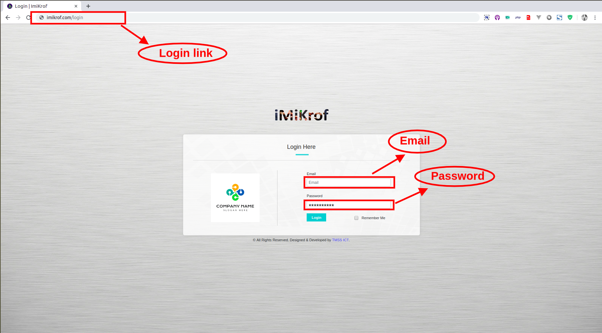কিবাবে সফটওয়্যার এ লগইন করবেন
iMikrof সফটওয়্যার এ লগইন করার জন্য প্রথমে আপনার কম্পিউটারের ইন্টারনেট কানেকশন নিশ্চিত করতে হবে। তারপর ইন্টারনেট ব্রাউজার ওপেন করতে হবে।সফটওয়্যারটির Recommended ইন্টারনেট ব্রাউজার হচ্ছে ।
ইন্টারনেট ব্রাউজার ওপেন করার পর ব্রাউজার এর Address bar এ সফটওয়্যার এর Login link লিখতে হবে।
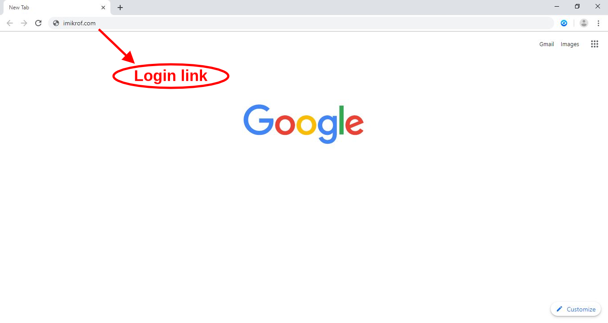Login link লেখার পর কী-বোর্ডের ইন্টার কী প্রেস করতে হবে,প্রেস করার পর উক্ত সফটওয়্যার এ প্রবেশ করার জন্য একটি লগইন ফর্ম আসবে।

লগইন ফর্মে দুইটি টেক্সট বক্স আছে একটি User Email Address এবং অপরটি Password । উক্ত টেক্সট বক্সে ই-মেইল ও পাসওয়ার্ড দেওয়ার পর লগইন বাটন এ ক্লিক করতে হবে ।ইউজার্ ই-মেইল ও পাসওয়ার্ড যদি বৈধ হয় তা হলে সফটওয়্যারটি এক্সেস করার অনুমতি পাবেন। আর যদি বৈধ না হয় তাহলে পুনরায় লগইন ফর্মে ফেরত পাঠাবে।
কিভাবে এমপ্লয়ীজদের(Employees) ইনফরমেশন সফটওয়্যার এ এন্ট্রি করবেন
এই মেনু থেকে সাধারনত Employee তথ্য জমা রাখা হয় এবং প্রয়োজনে Emloyee এর তথ্য পরিবর্তন ও মুছে দেওয়া যায়।
Employee টেবিলের ডান পাশে Add Employee বাটন আছে।উক্ত বাটনে ক্লিক করে আমরা নতুন Employee এর তথ্য জমা করতে পারি।

Add Employe বাটনে ক্লিক করলে একটি ফর্ম দেখতে পাবেন।ফর্মটি পূরনের মাধ্যমে নতুন কর্মচারীর তথ্য জমা রাখা হয়।
Employee টেবিলে Action নামে একটি কলাম আছে ,যেখানে দুইটি বাটন আছে যথক্রমে Edit,Delete.কোন একজন কর্মচারীর তথ্য পরিবর্তন করার প্রয়োজন হলে Edit বাটন ক্লিক করতে হবে।
Edit বাটনে ক্লিক করার পর একটি ফর্ম আসবে,উক্ত ফর্মে কর্মচারীর অ্যাড দেওয়া পূর্বের তথ্য প্রদর্শিত হবে।প্রয়োজন অনুসারে তথ্য পরিবর্তন করে Edit ফর্মের নিচে Update নামে একটি বাটন আছে ওই বাটনে ক্লিক করলে পরিবর্তিত তথ্য সেভ হবে এবং আমরা যদি কোন কর্মচারীর তথ্য মুছে ফেলতে চাই তবে Delete বাটনটি ক্লিক করে তথ্য মুছে দিতে পারি ।
Employee টে্বিল থেকে কোন emloyee এর তথ্য খুজে বের করতে হলে employee টেবিল এর সার্চ বক্সে employee এর নাম,পদবী এবং ব্রাঞ্জ এর নাম সিলেক্ট করে সার্চ বাটনে ক্লিক করতে হবে।সার্চ বাটনে ক্লিক করলে উক্ত employee এর তথ্য পাওয়া যাবে।
কিভাবে ইউজার এক্সেস(User Access) কনফিগার করবেন
ইউজার এক্সেস(User Access) হচ্ছে সেখান থেকে কোনো ইউজার বা কোনো ইমপ্লয়ী কে তাদের ডেজিগনেশন অর্থাৎ পদ মর্যাদা অনুযায়ী বিভিন্ন পারমিশন দেয়া হয়। অর্থাৎ, কোন কাজটা করতে পারবে আবার কোন কাজটা করতে পারবেনা সে পারমিশন দেয়া হয়। এক্ষেত্রে কোনো ইউজার অর্থাৎ ইমপ্লয়ী কে কোনো পারমিশন দিতে হলে RBAC তে মাউস পয়েন্টার রেখে ইউজার এক্সেস এ ক্লিক করতে হবে।
ক্লিক করার পর ইউজার লিস্ট আসবে। সেখানে ইউজার এক্সেস এর সকল তথ্য পাওয়া যাবে। কোনো তথ্য যদি ডিলিট করার প্রয়োজন হয় তাহলে মনিটরের পর্দার ডান পাশের (Delete) বাটনে ক্লিক করে ডিলিট করা যাবে।

নতুন করে কোনো ইউজার অ্যাড করতে হলে ইউজার এক্সেস ট্যাব ক্লিক করতে হবে।ক্লিক করার পর একটি ফর্ম আসবে।প্রথমে সেখান থেকে যে ইমপ্লয়ী কে পারমিশন দেয়া হবে সে ইমপ্লয়ীর ব্রাঞ্চ নেইম সিলেক্ট করতে হবে। ব্রাঞ্চ নেইম সিলেক্ট করার পর ওই ইমপ্লয়ীর নেইম সিলেক্ট করতে হবে। তারপর কি ধরণের পারমিশন দেয়া হবে তা সিলেক্ট করতে হবে। এবং সব শেষ সেভ বাটনে ক্লিক করলে পারমিশন সম্পন্ন হবে। তারপর তা লিস্ট এ অ্যাড হয়ে যাবে।
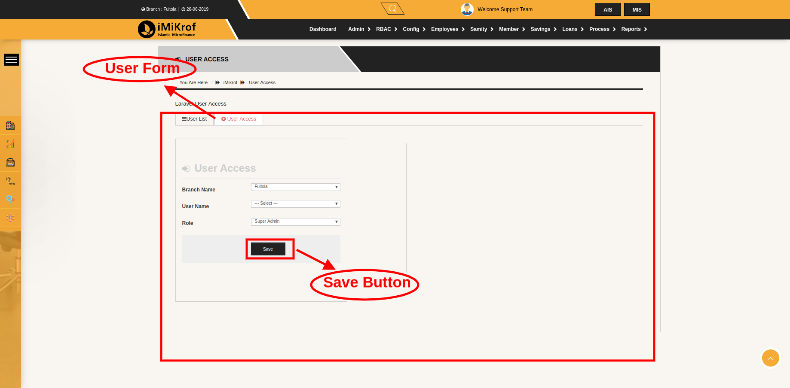কিভাবে ইমপ্লোই ডিপার্টমেন্ট(Employees Department) কনফিগার করবেন
Employees Department এর মধ্যে একটা কোম্পানির সবগুলো ডিপার্টমেন্টের নাম থাকবে এবং ইউজার এডমিন তাদের প্রয়োজন মতে ডিপার্টমেন্ট সংযোগ করতে পারবে এবং প্রয়োজন হলে ডিপার্টমেন্ট এর নাম সংশোধন ও ডিলিট করতে পারবে।
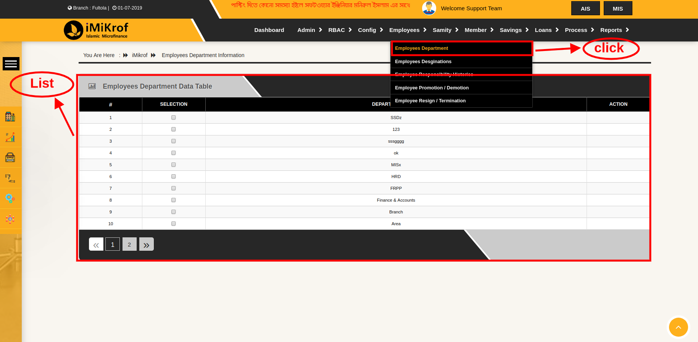প্রথমে Employee মেনু থেকে Employees Department এ ক্লিক করে Employees Department প্রবেশ করতে হবে। তারপর Employees Department Data Table এর ডান পাশের +Add new Department বাটনে ক্লিক করলে একটা মোডাল প্রদর্শন হবে
যেখানে “Enter Employee Department name and click Save” একটি ফরম আসবে সেখানে Department এর নিচে ইনপুট ফিল্ডে Department এর নাম লেখতে হবে তার পর নিচের Save বাটনে ক্লিক করে Add new Department সম্পূর্ণ করতে হবে ।

Employees Department এর ডিপার্টমেন্ট সংশোধন বা ডিলিট করার জন্য Employees Department Data Table এর ডান পাশের Action নামের কলামের এডিট বাটনে ক্লিক করে ডিপার্টমেন্টের নাম সংশোধন করা হয়।
Employees Department এর ডিপার্টমেন্ট ডিলিট করার জন্য Employees Department Data Table এর ডান পাশের Action নামের কলামের ডিলিট বাটনে ক্লিক করলে ডিপার্টমেন্ট টি ডিলিট হয়ে যাবে।
কিভাবে ইমপ্লোই ডেজিগন্যাশন (Employee Designation) কনফিগার করবেন
প্রথমে ইমপ্লোই ডেজিগন্যাশন (Employee Designation) নামক মডিউলে ক্লিক করলে অনেক গুলা মডিউল আসবে ।তার পর মডিউল থেকে ইমপ্লয়ী ডেজিগনেশন নামক অপশনটিতে ক্লিক করতে হবে ।
ক্লিক করলে পূর্বে যোগ হওয়া তথ্য সহ ১টা টেবিল দেখতে পাবো ।
তার পরে ইমপ্লোই ডেজিগন্যাশন (Employee Designation) টেবিল বাম দিকে অ্যাড ইমপ্লোই ডেজিগন্যাশন(Add Employee Designation) নামক একটি বাটন আসবে ,ঐ বাটনে ক্লিক করতে হবে ।
ফরম এর ভিতরে প্রথম যে ফিল্ড টি থাকবে তা হচ্ছে ডেজিগন্যাশন নাম,ডেজিগন্যাশন নাম এর মধ্যে ইমপ্লোই তার পদবি লিখবে তার পরের ফিল্ড হচ্ছে শট নেইম ঐ ফিল্ড এর মধ্যে ইমপ্লোই তার শট নামটি লিখবে। তার পরে আসবে কোড , কোড এর মধ্যে ইমপ্লোই তার কোড লিখবে তার পরে আসবে ডিপাট্মেণ্ট , ডীপাট্মেণ্ট এর মধ্যে ই্মপ্লোই তার ডিপামেণ্ট এর নাম লিখবে তাএ পরে হচ্ছে সেলারি , সেলারি ফিল্ড এর মধ্যে ইমপ্লোই তার সেলারি কত তা লিখবে তার পরে রিপোট সর্টিং অডার এই ভাবে সব গুলা ফিল্ড পুরন করার পরে সেইভ বাটনে ক্লিক করতে হবে |যদি কোণ ফিল্ড খালি থাকে তাহলে ইরোর দেখবে আর যদি খালি না থাকে তা হলে সাকসেস দেখাবে এবং তথ্য সংরক্ষণ হবে|এখন তথ্য গুলো ডাটা টেবিলে দেখা যাবে।
যদি কোণ তথ্য পরিবর্তন করতে হয় তা হলে ইডিট বাটনে ক্লিক করলে আগের মত একটি ফরম এ ডাটা গুলো দেখা যাবে . ঐ খানে খানে কোণ কিছু পরিবর্তন করতে হলে তা পরিবর্তন করে আবার সেইভ দিতে হবে.
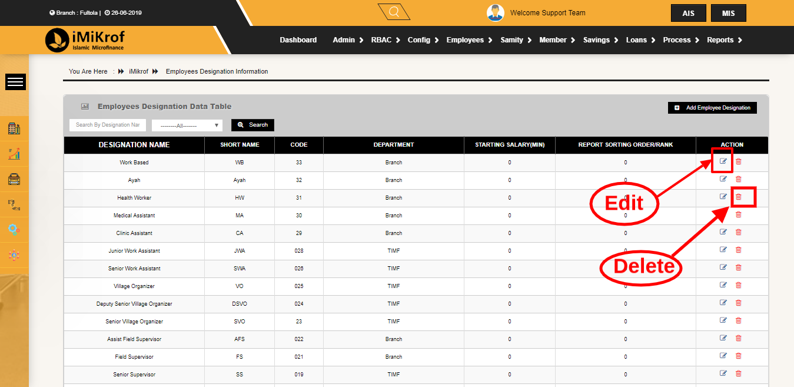টেবিল থেকে কোণ ডাটা বাদ দিতে হলে তাহলে ডিলিট বাটনে ক্লিক করলে তা ডিলিট হবে
উক্ত টেবিলের মধ্যে যদি কোন ডাটা খুজে বের করতে হয় তাহলে নিচের চিত্র লক্ষ করুন
কিভাবে এমপ্লয়ী রিজাইন/টারমিনেশন কনফিগার করবেন
প্রথমে এমপ্লয়ী নামক মডিউলে ক্লিক করলে নিচের মতো অনেক গুলো অপশন থেকে এমপ্লয়ী রেসপনসিবিলিটি হিসটরি নামক অপশনে ক্লিক করতে হবে।

এরপর এমপ্লয়ী রেসপনসিবিলিটি হিসটরি নামক নিচের মতো একটি পেইজ আসবে।

এখানে এমপ্লয়ী বা চাকুরিজিবীদের রেসপনসিবিলিটি হিসটরি গুলো তালিকা আকারে দেখা যাবে। এরপর নিচের ছবির মতো উপরের ডান পাশে এড এমপ্লয়ী রেসপনসিবিলিটি হিসটরি নামক বাটনে ক্লিক করতে হবে।
তারপর নিচের মতো একটি এড ফরম আসবে।
এখানে প্রথম ফিল্ড হচ্ছে ব্রান্স বা শাখা। এখানে প্রথমে যে এমপ্লয়ীর দায়িত্ব তথা রেসপনসিবিলিটি থাকবে তার ব্রান্স বা শাখার নাম দিতে হবে। তারপরের ফিল্ড হচ্ছে এমপ্লয়ীর নাম। এখানে এমপ্লয়ীর নাম দিতে হবে। তারপরের ফিল্ড হচ্ছে কোন তারিখ হতে তার রেসপনসিবিলিটি বা দায়িত্ব শুরু হবে তার তারিখ উল্লেখ বা এন্ট্রি করে দিতে হবে। তার পরের ফিল্ড হচ্ছে কোন তারিখে তার (এমপ্লয়ীর) দায়িত্ব বা রেসপনসিবিলিটি শেষ হবে তার তারিখ এড বা লিখে দিতে হবে।
এভাবে সবগুলো ফিল্ড পূরন করা হয়ে গেলে সেইভ নামক বাটনে ক্লিক করতে হবে। যদি সব তথ্য ঠিক ঠিক ভাবে পূরন করা হয় তাহলে সাকসেসফুল নটিফিকেশন দেখাবে। নাহলে ফেইলড নামক নটিফিকেশন দেখাবে। তাহলেই ঐ এমপ্লয়ী বা চাকুরিজিবীর রেসপনসিবিলিটি হিসটরি এড হয়ে যাবে।রপরে সেইভ করা তথ্য গুলো এমপ্লয়ী রেসপনসিবিলিটি হিসটরি নামক টেবিলে দেখাবে। যদি ইনফরমেশন বা তথ্যে কোন ভুল থাকে তাহলে নিচের মতো এডিট বাটনে ক্লিক করে আবার আগের মতো ফরমে তথ্য ঠিক করে সেইভ করা যাবে।

আবার কোন এমপ্লয়ীর তথ্য বাদ দিতে হলে নিচের ছবির মতো ডিলিট নামক বাটনে ক্লিক করলে তথ্য কি সত্যি ডিলিট করতে চাই কিনা? এই রকম একটা নটিফিকেশন আসবে ঐখানে হ্যা নামক বাটনে ক্লিক করলে তথ্য ডিলিটি হয়ে যাবে।

এই ডাটা টেবিল থেকে নিচের মতো ক্যাটাগরি অনুযায়ী তথ্য অনুসন্ধান করা যাবে।

কিভাবে ইমপ্লোই প্রমোশান কনফিগার করবেন
প্রথমে এমপ্লয়ী নামক মডিউলে ক্লিক করলে নিচের মতো অনেক গুলো অপশন থেকে এমপ্লয়ী প্রমোশান নামক অপশনে ক্লিক করতে হবে।

এরপর নিচের মতো এমপ্লয়ী প্রমোশান নামক পেইজটি আসবে।

এখানে যেসব এমপ্লয়ীদের প্রমোশান দেওয়া হয়েছে তার তালিকা দেখা যাবে। এরপর উপরের ডান পাশে এড নিউ এমপ্লয়ী প্রমোশান নামক বাটনে নিচের মতো ক্লিক করতে হবে।
তারপর এড এমপ্লয়ী প্রমোশান নামক নিচের মতো একটি ফরম আসবে।

এখানে প্রথম ফিল্ড হচ্ছে ব্রান্স বা শাখা। এখানে প্রথমে যে এমপ্লয়ী বা চাকুরিজিবী যে ব্রান্স বা শাখায় আছে তার তথ্য লিখতে বা এন্ট্রি দিতে হবে । তারপর যে ফিল্ড আছে তাতে যে এমপ্লয়ীকে প্রমোশান দেওয়া হবে তার নাম লিখতে হবে। তারপরের ফিল্ড হচ্ছে পূরানা পদবী বা ওল্ড ডেজিগনেশান। এই ফিল্ডে এমপ্লয়ীর পূরান বা যে পদবী থেকে প্রমোশান পাবে তা লিখতে হবে। তারপরের ফিল্ডে নতুন যে পদবীতে প্রমোশান দেওয়া হবে তা লিখতে হবে। এরপর সব তথ্য সঠিক ভাবে লিখা বা এন্ট্রি করা হলে সেইভ নামক বাটনে কিøক করতে হবে। তাহলে তথ্য সেইভ বা সংরক্ষিত হবে। যদি ফরমের তথ্য লিখার পর সেইভ করার প্রয়োজন না হলে কেনসেল নামক বাটনে ক্লিক কওে ফরম টির তথ্য বাদ দেওয়া যাবে। যদি ফরমের সকল ফিল্ড সঠিক ভাবে পূরন করা না হয় তাহলে সেইভ বাটনে ক্লিক করলে এরর বা ফেইল্ড নটিফিকেশান দেখাবে এবং তথ্য সেইভ হবে না। আর যদি সকল ফিল্ড সঠিক ভাবে পূরন কওে সেইভ করা হয় তাহলে সাকসেসফুল নামক নটিফিকেশান দেখাবে এবং তথ্য সেইভ বা সংরক্ষিত হবে।
সংরক্ষিত তথ্য সমূহ ডাটা টেবিলের মধ্যে দেখা যাবে। যদি কোন তথ্য পরিবর্তন করার প্রয়োজন হয় তাহলে নিচের মতো এডিট নামক বাটনে ক্লিক করে আবার আগের ফরমের মতো ফরমে গিয়ে তথ্য পরিবর্তন করে সেইভ করা যায়।

আবার কোন এমপ্লয়ীর তথ্য বাদ দিতে হলে ডিলিট নামক নিচের মতো বাটনে ক্লিক করলে তথ্য কি সত্যি ডিলিট করতে চাই কিনা? এই রকম একটা নটিফিকেশন আসবে ঐখানে হ্যা নামক বাটনে ক্লিক করলে তথ্য ডিলিটি হয়ে যাবে।

এই ডাটা টেবিল থেকে নিচের মতো ক্যাটাগরি অনুযায়ী তথ্য অনুসন্ধান করা যাবে।

কিভাবে এমপ্লয়ী রিজাইন/টারমিনেশন কনফিগার করবেন
এমপ্লয়ী মডিউলে মাউস পয়েন্টার রাখলে এমপ্লয়ী রিজাইন/টারমিনেশন লেখাটি দেখতে পাবো।

ক্লিক ক্লিক করার সাথে সাথে যে সব এমপ্লয়ীরা চাকরীচূত হয়েছে তাদের ১টা তালিকা দেখতে পাবো ।

যদি কোনো নির্দিষ্ট এমপ্লয়ীর তথ্য জানতে চাই তাহলে ওই এমপ্লয়ীর কোড এবং ব্রাঞ্চ নাম দিয়ে সার্চ করতে হবে ।

তথ্য অ্যাড করার সময় যদি কোনো ভুল হয়ে থাকে তাহলে তা ডিলিট করে পুনরায় অ্যাড করবো অথবা এডিট করে দিবো । টেবিল এর ডান সাইডে অ্যাকশন লেখার নিচে যে লাল বাটন বা ডিলিট এর আইকন আছে ওই বাটন এ ক্লিক করলে ডিলিট অপারেশন কমপ্লিট হবে ।

ডিলিট বাটন এর পাশেই এডিট বাটন ওই বাটন এ ক্লিক করলে ১টা ফর্ম আসবে এরপর সঠিক তথ্য দিয়ে ফর্ম পূরণ করে সেভ করতে হবে ।

এরপর আসি যদি কোনো এমপ্লয়ী রেজাইন নে তাকে অ্যাড দিতে হবে অ্যাড নিউ বাটন করুন |
ক্লিক করলে ১টা ফর্ম দেখতে পাবো এরপর ব্রাঞ্চ নাম এবং এমপ্লয়ী সিলেক্ট করলে ১টা টেবিল জেনারেট হবে টেবিল থেকে তথ্য গুলো সঠিক আছে কিনা তা চেক করে সেভ বাটন এ ক্লিক করবো । এভাবে এমপ্লয়ী রেজাইন/টারমিনেশন এর কাজ শেষ ।

কিভাবে সমিতি (Samity) কনফিগার করবেন?
সমিতি অফশনে মাউস পয়েন্টার রেখে সমিতিতে ক্লিক করলে সকল সমিতির লিস্ট আসে।সেখান থেকে আমরা সমিতির সকল তথ্য দেখতে পারি।এবং ডিলিট বাটনে ক্লিক করে অপ্রয়োজনীয় তথ্য ডিলিট করতে পারি। আর এডিট বাটনে ক্লিক করে তথ্য সংশোধন করতে পারি।
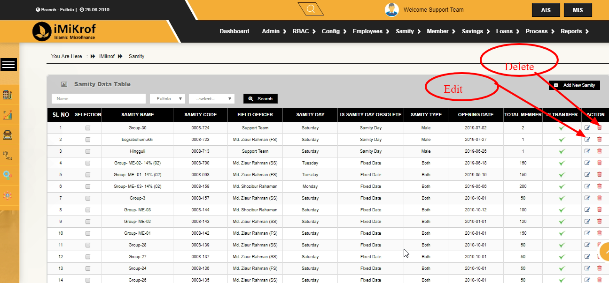সমিতি টেবিলের ডান পাশে অ্যাড নিউ সমিতি একটা বাটন আছে । উক্ত বাটনে ক্লিক করে আমরা নতুন সমিতি এর তথ্য জমা করতে পারি। অ্যাড সমিতি বাটনে ক্লিক করলে একটি ফরম দেখতে পাবো পূরণের মাধ্যমে নতুন সমিতির তথ্য ও সমিতি যোগ করা হয়।
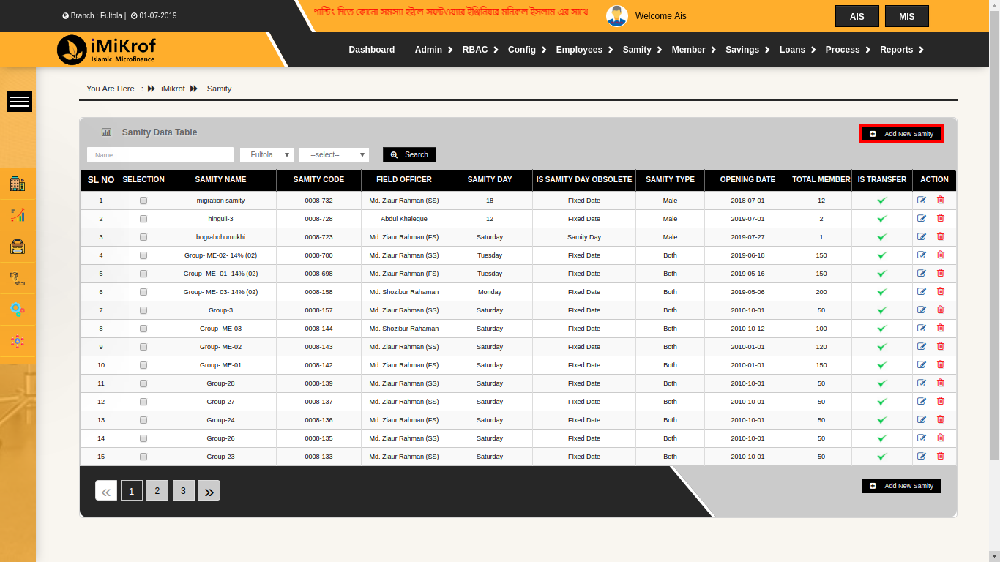কিভাবে সমিতি ট্রান্সফার (Samity Transfer) করবেন?
মেম্বার সমিতি ট্রান্সফার হচ্ছে কোন সমিতির মেম্বারকে অন্য কোন নতুন বা পুরাতন কোন সমিতিতে ট্রান্সফার করা। তবে কোন মেম্বারকে অন্য সমিতিতে ট্রান্সফার করতে হলে অবশ্যই তার লোন বা ঋন এর টাকা সম্পূর্ন পরিশোধ করতে হবে। এবং ট্রান্সফার এর সময় তার ডিপোজিট থাকলে তা উঠাতে হবে অর্থাৎ উইথড্র করতে হবে , এবং ডিপোজিট একাউন্ট বন্ধ করা হবে।
মেম্বার সমিতি ট্রান্সফার করতে হলে প্রথমে মেম্বার নামক মডিউলে ক্লিক করলে নিচের মতো কতগুলো সাব-মডিউল থেকে মেম্বার সমিতি ট্রান্সফার নামক অপশানে ডাবল ক্লিক করতে হবে।
তাহলে নিচের মতো একটা পেজ আসবে।
এখানে যেসব মেম্বারকে এক সমিতি থেকে অন্য সমিতিতে ট্রান্সফার করা হয়েছে তার তালিকা দেখা যাবে।এখন কোন মেম্বারকে অন্য সমিতিতে ট্রান্সফার করতে হলে এই পেজের উপরের ডান পাশে নিচের মতো এড নামক বাটনে ক্লিক করতে হবে।
তাহলে নিচের মতো একটা ফরম আসবে।
এখানে ফরমের মধ্যে প্রথম ফিল্ড হচ্ছে ব্রাঞ্চ নেম যা ডিফল্ট ঠিক করা বা লেখা থাকবে। এর পরের ফিল্ড হচ্ছে মেম্বার নেম এখানে যে মেম্বারকে ট্রান্সফার করা হবে তার নাম উল্লেখ করতে হবে। তাহলে এর পরের ফিল্ড অটো বা নিজে নিজে পূরন হয়ে যাবে। এবং তার পরের ফিল্ড ও পূরন হয়ে যাবে। যেখানে মেম্বারের সমিতি দেখা যাবে। এর পরের ফিল্ড হচ্ছে নিউ প্রাইমারি প্রোাডাক্ট কোড যাতে মেম্বার যে নতুন সমিতিতে ট্রান্সফার হবে ঐ সমিতিতে তার প্রোডাক্ট কোড বা টাইপ লেখে দিতে হবে। এর পরের ফিল্ড হচ্ছে কোন সমিতিতে ট্রান্সফার করা হবে তার নাম লিখতে হবে। যার ফলে পরের ফিল্ডে নিজে নিজে নতুন মেম্বার আইডি সেট হয়ে যাবে।
সব কিছু সঠিক ভাবে পূরন করা হলে এইবার সেইভ নামক বাটনে ক্লিক করতে হবে। তাহলে তথ্য সমূহ সংরক্ষিত হবে। যদি কোন ফিল্ড খালি থাকে অথবা সঠিক ভাবে পূরন করা না হয় তাহলে এরর বা ফেইল্ড নটিফিকেশান দেখাবে।
এখন সংরক্ষিত তথ্য সমূহ ডাটা টেবিলে দেখাবে। এখন কোন তথ্য পরিবর্তন করার প্রয়োজন হলে নিচের মতো এডিট বাটনে ক্লিক করতে হবে।
হবে। তাহলে আগের মতো ফরমটি আসবে। ঐখানে প্রয়োজনীয় তথ্য পরিবর্তন করে সেইভ বাটনে ক্লিক করলে পরিবর্তন হয়ে যাবে।আবার কোন তথ্য ডিলিট বা বাদ দিতে নিচের মতো ডিলিট নামক বাটনে ক্লিক করলে অনুমতি চেয়ে নটিফিকেশান আসবে ঐখানে হ্যা দিলে ডাটা ডিলিট হয়ে যাবে।
আবার ডাটা টেবিলের অনেক বেশি তথ্য হতে কোন তথ্য খুজে বের করতে হলে নিচের মতো করে প্রয়োজনীয় তথ্য দিয়ে চার্চ বাটনে ক্লিক করলে ঐ তথ্য সমূহ যদি থাকে তাহলে চলে আসবে।
এভাবেই কোন মেম্বারকে অন্য সমিতিতে ট্রান্সফার করতে হলে উপরের উল্লেখিত প্রসেস বা ধাপ সমূহ অনুসরন করতে হবে।
কিভাবে সমিতি ফিল্ড অফিসার (Samity Field Officer) কনফিগার করতে হবে
Samity মডিউলের ভিতরে Samity Filed Officers Change নামে একটি সাব মডিউল আছে। Samity Filed Officers Change সাব মডিউল হচ্ছে কোন সমিতির ফিল্ড পর্যায়ের কর্মীকে পরিবর্তন করা বা কর্মী যদি নিজ থেকে পদ ত্যাগ করে তবে তার শূন্য স্থান পূরন করার জন্য নতুন কর্মী নিয়োগ করার কাজ এই মডিউলে করা হয়।
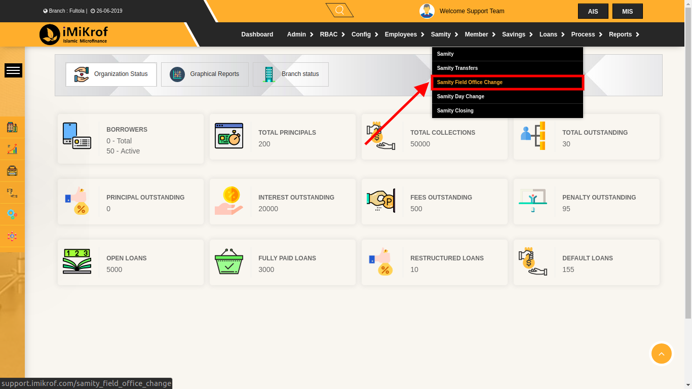Samity Filed Officers Change এ ক্লিক করার পর একটি টেবিল প্রদর্শিত হয় ,উক্ত টেবিলে পরিবর্তিত অফির্সাসদের যাবতীয় তথ্য সংরক্ষন করা হয়।টেবিলের ডান পাশে এবং নিচের অংশে একটি add বাটন আছে ।

add বাটনে ক্লিক করার পর একটি ফর্ম আসবে ।ফর্মে আগে ব্রাঞ্চ সিলেক্ট করতে হবে অর্থাৎ অফিসার্স কোন ব্রাঞ্চের অধিনে পরিবর্তন করতে হবে তা ঠিক করতে হবে। তারপর কোন সমিতির অধিনে অফির্সাস পরিবর্তন করতে হবে তা সিলেক্ট করতে হবে।সমিতি সিলেক্ট করে Old Officers ফিল্ডে আগের অফিসার্সের নাম আসবে অর্থাৎ ওই সমিতির পূর্বের ফিল্ড অফিসার্স এর নাম আসবে।তারপর New filed Officers ফিল্ডে নতুন যে কর্মি নিয়োগ দিবে তা সিলেক্ট করতে হবে ।
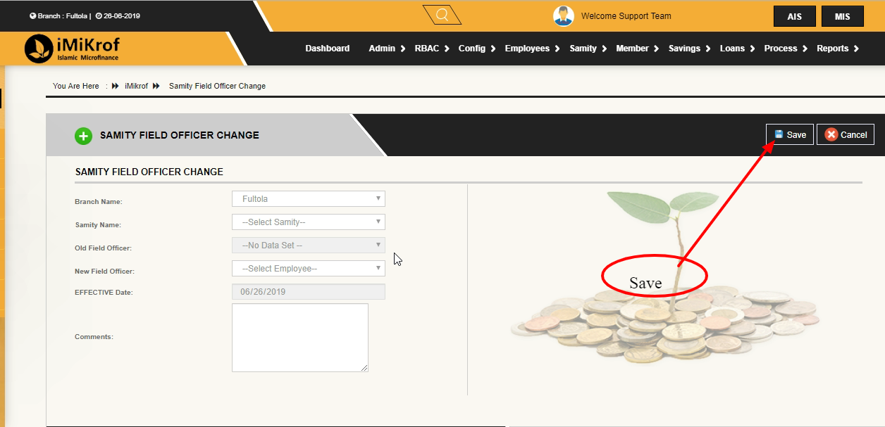
এরপর Save বাটনে ক্লিকরে ফর্মটির তথ্য ডাটাবেস টেবিলে সংরক্ষিত হবে, এবং ডাটা টেবিলে প্রদর্শিত হবে।টেবিলের উপরে বাম পাশে একটি সার্চ বক্স আছে যেখানে সমিতির নাম এবং ব্রাঞ্জ যুক্ত করে সার্চ বাটনে ক্লিক করে উক্ত সমিতির তথ্য খুজে বের করা যায়।
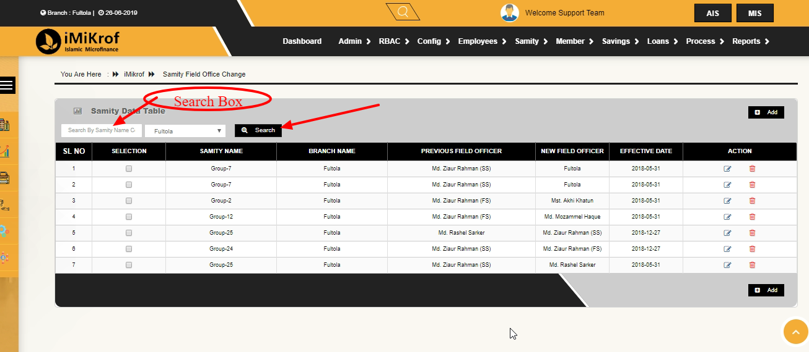
টেবিলের Action নামে একটি কলাম আছে যেখানে Edit & Delete নামে দুইটি বাটনে আছে ।

Edit বটনে ক্লিক করার পর একটি ফর্ম আসবে ,ফর্মে কর্মকর্তা/কর্মচারীর আগের তথ্য আসবে এবং সেখান থেকে কর্মকর্তা/কর্মচারীর তথ্য প্রোয়জন অনুযায়ী পরিবর্তন করে Update বাটনে ক্লিক করে পরিবর্তিত তথ্য টেবেলি যুক্ত করা হয়।
কিভাবে সমিতি ফিল্ড অফিসার কনফিগার করতে হবে
Samity মডিউলের ভিতরে Samity Filed Officers Change নামে একটি সাব মডিউল আছে। Samity Filed Officers Change সাব মডিউল হচ্ছে কোন সমিতির ফিল্ড পর্যায়ের কর্মীকে পরিবর্তন করা বা কর্মি যদি নিজ থেকে পদ ত্যাগ করে তবে তার শূন্য স্থান পূরন করার জন্য নতুন কর্মী নিয়োগ করার কাজ এই মডিউলে করা হয়।
Samity Filed Officers Change এ ক্লিক করার পর একটি টেবিল প্রদর্শিত হয় ,উক্ত টেবিলে পরিবর্তিত অফির্সাসদের যাবতীয় তথ্য সংরক্ষন করা হয়।টেবিলের ডান পাশে এবং নিচের অংশে একটি add বাটন আছে ।
add বাটনে ক্লিক করার পর একটি ফর্ম আসবে ।ফর্মে আগে ব্রাঞ্জ সিলেক্ট করতে হবে অর্থাৎ অফিসার্স কোন ব্রাঞ্জের অধিনে পরিবর্তন করতে হবে তা ঠিক করতে হবে। তারপর কোন সমিতির অধিনে অফির্সাস পরিবর্তন করতে হবে তা সিলেক্ট করতে হবে।সমিতি সিলেক্ট করে Old Oficers ফিল্ডে আগের অফিসার্সের নাম আসবে অর্থাৎ ওই সমিতির পূর্বের ফিল্ড অফিসার্স এর নাম আসবে।তারপর new filed officers ফিল্ডে নতুন যে কর্মি নিয়োগ দিবে তা সিলেক্ট করতে হবে ।
এরপর Save বাটনে ক্লিকরে ফর্মটির তথ্য ডাটাবেস টেবিলে সংরক্ষিত হবে, এবং ডাটা টেবিলে প্রদর্শিত হবে।টেবিলের উপরে বাম পাশে একটি সার্চ বক্স আছে যেখানে সমিতির নাম এবং ব্রাঞ্জ যুক্ত করে সার্চ বাটনে ক্লিক করে উক্ত সমিতির তথ্য খুজে বের করা যায়।
টেবিলের Action নামে একটি কলাম আছে যেখানে Edit & Delete নামে দুইটি বাটনে আছে ।
Edit বটনে ক্লিক করার পর একটি ফর্ম আসবে ,ফর্মে কর্মকর্তা/কর্মচারীর আগের তথ্য আসবে এবং সেখান থেকে কর্মকর্তা/কর্মচারীর তথ্য প্রোয়জন অনুযায়ী পরিবর্তন করে Update বাটনে ক্লিক করে পরিবর্তিত তথ্য টেবেলি যুক্ত করা হয়।
কিভাবে সমিতি ডে চেইন্জ (Samity Day Change) কনফিগার করতে হবে
সমিতি ডে চেইন্জ হচ্ছে, যে দিন সমিতির কিস্তি বা ইন্সটলমেন্ট দেওয়া হবে তার সময় বা বার। অর্থাৎ এই বার পরিবর্তন করার জন্যই এটি ব্যবহার করা হয়।প্রথমে সমিতি নামক মডিউল এ ক্লিক করলে কতগুলো সাব-মডিউল বা অপশান আসে নিচের মতো ।

এখান থেকে সমিতি ডে চেইন্জ নামক মডিউলে ক্লিক করলে নিচের মতো একটা ডাটা টেবিল খুলবে বা আসবে।

এখানে যে যে সমিতির ডে গুলো পরিবর্তন করা হয়েছে তার তালিকা দেখা যাবে।এখন কোন সমিতির ডে বা কিস্তির দিন পরিবর্তন করতে হলে এ পেইজের উপরের ডান পাশেরে এড নামক বাটনে ক্লিক করতে হবে। যা নিচে দেখানো হলো।

তাহলে নিচের মতো একটি ফরম আসবে।

এখানে প্রথম ফিল্ড হচ্ছে ব্রাঞ্চ নেইম অর্থাৎ যে ব্রাঞ্চের সমিতির বার পরিবর্তন করা হবে তার নাম লিখতে হবে। এরপরের ফিল্ড হচ্ছে সমিতির নাম, এখানে যে সমিতির বার পরিবর্তন করা হবে তার নাম লিখতে হবে। তার পরের ফিল্ড হচ্ছে সমিতির বর্তমান যে বার আছে তা দেখা যাবে, এটি পরিবর্তন করা যাবে না। এরপরের ফিল্ডে নতুন যে বার বা দিন ঠিক করতে চাই তা লিখতে হবে। এভাবে সব কিছু সঠিক ভাবে পরিবর্তন করা হয়ে গেলে নিচের মতো করে সেইভ বাটনে ক্লিক করলে তথ্য গুলো সংরক্ষিত হবে। যদি ফিল্ড গুলো সঠিক ভাবে পূরন করা না হয় তাহলে এরর বা ফেইল্ড নটিফিকেশান দেখাবে।এখন সংরক্ষিত তথ্যটি আগের মতো ডাটা টেবিলে দেখাবে।যদি কোন তথ্য পরিবর্তন করার প্রয়োজন হয় তাহলে নিচের মতো করে এডিট বাটনে ক্লিক করলে আবার আগের ফরমে তথ্য সহ চলে আসবে ।

এখানে পরিবর্তন করে আবার সেইভ করতে হবে।আবার কোন তথ্য যদি বাদ দিতে হয় তাহলে নিচের মতো ডিলিট বাটনে ক্লিক করতে হবে। তাহলে ডাটা ডিলিট হয়ে যাবে।

কিভাবে সমিতি ক্লোজিং (Samity Closing) কনফিগার করতে হবে
সমিতি মডিউলে মাউস পয়েন্টার রাখলে একেবারে শেষে সমিতি ক্লোজিং দেখতে পাবো।
সমিতি ক্লোজিং এ ক্লিক করার সাথে সাথে সমিতি ক্লোজিং এর পূর্ববর্তী ইতিহাস দেখতে পাবো । অর্থাৎ, পূর্বে যে সব সমিতি গুলো ক্লোজিং হয়েছে।
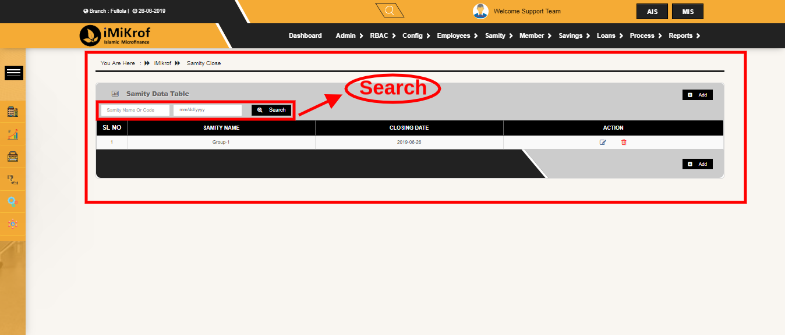কোনো নির্দিষ্ট তথ্য জানার জন্য সমিতি নাম অথবা সমিতি কোড এবং তারিখ দিয়ে সার্চ করলে কাঙ্খিত তথ্য দেখতে পাবো।

টেবিল থেকে কোনো তথ্য ভুল হলে তা ডিলিট করা বা এডিট করা যাবে কি ভাবে করতে হবে তা অ্যাড করার পর বলছি। সমিতি টেবিলের ঠিক ডান পাশেই অ্যাড বাটন।
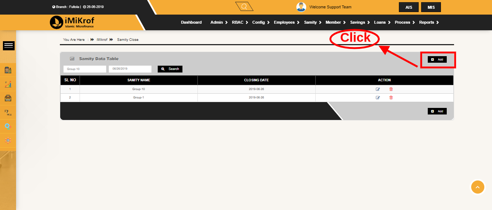
অ্যাড বাটন এ ক্লিক করলে ১টা ফর্ম দেখতে পাবো ফর্মে সঠিক তথ্য দিয়ে সেভ বাটন এ ক্লিক করবো।

সেভ হয়ে তা সরাসরি সমিতি ক্লোজিং টেবিল এ চলে যাবে। টেবিল থেকে চেক করে নিব অ্যাড হওয়া তথ্য সঠিক আছে কিনা । যদি তথ্য ভুল হয়ে থাকে তাহলে ডিলিট করে পুনরায় অ্যাড করবো। কারণ এডিট টেবিল থেকে তথ্য এডিট করা যাবে না শুধু ডিলেটেই করা যাবে।

কিভাবে মেম্বার ইনফরমেশন(Member Information) ইনফরমেশন সফটওয়্যার এ এন্ট্রি করবেন
মেম্বার অপসন এ মাউস পয়েন্টার রেখে মেম্বার ইনফরমেশন এ ক্লিক করলে সকল মেম্বারের তথ্য পাওয়া যায়
এবং ডান পাশের ভিউ বাটনে ক্লিক করে প্রয়োজনে পুরো তথ্য দেখা যায়।ডিলিট বাটনে ক্লিক করে অপ্রয়োজনীয় তথ্য ডিলিট করা যায়। ইডিট বাটনে ক্লিক করে ভুল তথ্য আপডেট বা সংশোধন করা যায়। নতুন কোনো মেম্বার অ্যাড করতে হলে অ্যাড নিউ মেম্বার বাটনে ক্লিক করতে হবে।
 ক্লিক করার পর একটি ফর্ম আসবে। সেখানে মেম্বারের সকল প্রয়োজনীয় তথ্য পূরণ করে সেভ বাটনে ক্লিক করলে নতুন মেম্বার অ্যাড হয়ে যাবে।
ক্লিক করার পর একটি ফর্ম আসবে। সেখানে মেম্বারের সকল প্রয়োজনীয় তথ্য পূরণ করে সেভ বাটনে ক্লিক করলে নতুন মেম্বার অ্যাড হয়ে যাবে।
কিভাবে মেম্বার ইনফরমেনশন বাই ন্যাশনাল আইডি (Member Information by National ID) দিয়ে সার্চ করতে হবে
কোন সদস্য ভর্তি করার সময় যদি জাতীয় পরিচয়পত্র নম্বর বাধ্যতামূলক করা হয় তাহলে এই অপশন এর মাধ্যমে খুব সহজে জাতীয় পরিচয়পত্র নম্বর এর মাধ্যমে যে কোন সদস্য কে খুজে বের করা সম্ভব। এমনকি সদস্য যদি একই প্রতিষ্ঠান এর এক শাখা থেকে একবার লোন নেওয়ার পর যদি অন্য কোন শাখা থেকে আবার লোন গ্রহণ করার চেষ্টা করে। সেক্ষেত্রে জাতীয় পরিচয়পত্র নম্বর দেওয়ার সাথে সাথেই উক্ত মেম্বার এর সকল তথ্য সফটওয়্যারে প্রদর্শন করবে।

মেম্বারের জাতীয় পরিচয়পত্র নম্বর চিত্রের No.1 ইনপুট বক্সে বসিয়ে চিত্রের No.2 সার্চ বাটনে ক্লিক করলে নিচের টেবিলে উক্ত মেম্বার এর সকল তথ্য প্রদর্শন হবে।
উক্ত মেম্বার এর সকল তথ্য চিত্রের No.3 এডিট বাটনে ক্লিক করে হালনাগাদ করা হয় এবং উক্ত মেম্বার এর সকল তথ্য চিত্রের No.4 ডিলিট বাটনে ক্লিক করে মুছে ফেলা হয়
কিভাবে মেম্বার সমিতি ট্রান্সফার (Member Samity Transfer) কনফিগার করতে হবে
কোন সদস্য ভর্তি করার সময় যদি জাতীয় পরিচয়পত্র নম্বর বাধ্যতামূলক করা হয় তাহলে এই অপশন এর মাধ্যমে খুব সহজে জাতীয় পরিচয়পত্র নম্বর এর মাধ্যমে যে কোন সদস্য কে খুজে বের করা সম্ভব। এমনকি সদস্য যদি একই প্রতিষ্ঠান এর এক শাখা থেকে একবার লোন নেওয়ার পর যদি অন্য কোন শাখা থেকে আবার লোন গ্রহণ করার চেষ্টা করে। সেক্ষেত্রে জাতীয় পরিচয়পত্র নম্বর দেওয়ার সাথে সাথেই উক্ত মেম্বার এর সকল তথ্য সফটওয়্যারে প্রদর্শন করবে।
মেম্বারের জাতীয় পরিচয়পত্র নম্বর চিত্রের No.1 ইনপুট বক্সে বসিয়ে চিত্রের No.2 সার্চ বাটনে ক্লিক করলে নিচের টেবিলে উক্ত মেম্বার এর সকল তথ্য প্রদর্শন হবে।
উক্ত মেম্বার এর সকল তথ্য চিত্রের No.3 এডিট বাটনে ক্লিক করে হালনাগাদ করা হয় এবং উক্ত মেম্বার এর সকল তথ্য চিত্রের No.4 ডিলিট বাটনে ক্লিক করে মুছে ফেলা হয়
কিভাবে মেম্বার প্রাইমারি প্রোডাক্ট ট্রান্সফার (Member Product Transfer) করতে হবে
Member Primary Product Transfer এ ক্লিক করলে Member Primary Product Transfer এর একটি লিস্ট আসবে। সেখানে মেম্বারের প্রাইমারি প্রোডাক্ট ট্রান্সফারের সকল তথ্য পাওয়া যাবে। প্রয়োজনে তথ্য ফিল্টার বা সার্চ করা যাবে। ডিলিট বাটনে ক্লিক করে অপ্রয়োজনীয় তথ্য ডিলিট করা যাবে। এবং কোনো তথ্য সংশোধন করার প্রয়োজন হলে তা ইডিট বাটনে ক্লিক করে সংশোধন করা যাবে।
নতুন কোনো প্রাইমারি প্রোডাক্ট ট্রান্সফার করতে হলে অ্যাড বাটনে ক্লিক করতে হবে। তারপর একটি ফর্ম আসবে। সেটি পরিপূর্ন ভাবে ফিলাপ করে সেভ বাটনে ক্লিক করলে মেম্বারের প্রাইমারি প্রোডাক্ট ট্রান্সফার হয়ে যাবে। এবং তা লিস্ট এ অ্যাড হয়ে যাবে।
কিভাবে মেম্বার ক্লোজিং (Member Closing) কনফিগার করতে হবে
মেম্বার মডিউলে উপর মাউস পয়েন্টার রাখলে মেম্বার ক্লোজিং দেখতে পাবো ।
মেম্বার ক্লোজিং এ ক্লিক করলে পূর্বে যোগ হওয়া তথ্য সহ ১টা টেবিল দেখতে পাবো ।
নির্দিষ্ট কোনো তথ্য জানার জন্য টেবিলের ঠিক বাম পাশের উপরে ব্রাঞ্চ নাম,কত তারিখ থেকে কত তারিখ এর তথ্য দেখতে চান ওই তারিখ অথবা মেম্বার কোড দিয়ে সার্চ করলে কাঙ্খিত তথ্য পাবো ।টেবিল থেকে চাইলে যে কোনো তথ্য ডিলিট বা এডিট ও করা যাবে ।
অ্যাড সম্পর্কে জেনে তারপর যে এডিট এবং ডিলিট কি ভাবে করতে হবে তা জানবো ।টেবিল দান পাশে উপরে তাকালেই অ্যাড বাটন টি দেখতে পাবো ।
অ্যাড বাটন ক্লিক করলে ১টা ফর্ম দেখতে পাবো ।
ফর্ম এ প্রয়োজনীয় তথ্য দিয়ে ফর্ম পূরণ করবো মেম্বার সিলেক্ট করার পর পরই ফর্মের নিচে ১টা টেবিল জেনারেট হবে ।

লোন যদি ক্লোজ হয় এবং সেভিংস এর টাকা যদি উইথড্র করা হয় তবেই মেম্বার ক্লোজিং করা সম্ভব । সব যদি ঠিক থাকে তাহলে সাবমিট বাটন এ ক্লিক করে মেম্বার ক্লোজিং এর কাজ শেষ করতে হবে ।
কিভাবে মেম্বার অ্যাটেনডেন্স (Member Attendence) নিতে হবে
মেম্বার অ্যাটেনডেন্স এর মাধ্যমে আমরা কতজন মেম্বার উপস্থিত ও অনুপস্থিত তার হিসাব রাখতে পারি।কিভাবে মেম্বার অ্যাটেনডেন্স এ যাওয়া যায় তা ছবি সহ নিচে দেওয়া হল।
মেম্বার অ্যাটেনডেন্স এ ক্লিক করার পর আমাদেরকে এই ফর্মটা দেখাবে।
অতঃপর আমাদেরকে অ্যাটেনডেন্স ফর্মটা পূরণ করে নিতে হবে । ফরমের মধ্যে ব্রাঞ্চ এর নাম অটো সিলেক্ট হবে তারপর সমিতি নাম এবং তারিখ সিলেক্ট করতে হবে । সব কিছু পূরণ হয়ে গেলে সমিতির মধ্যে মেম্বারদের নাম ও অ্যাটেনডেন্স অটো জেনারেট হয়ে পেজ দেখাবে যেখান থেকে আমরা ব্রাঞ্চ এর অধীনে একটা সমিতির সব মেম্বার এর উপস্থিত অটো দেওয়া থাকবে সেখান থেকে যারা অনুপস্থিত তাদের সিলেক্ট বক্স থেকে ক্লিক করে Absent নিতে হবে
সিলেক্ট হয়ে গেলে উপরের সেভ বাটন এ ক্লিক করব
কি ভাবে সেভিংস এর কাজ সম্পূর্ণ করতে হবে
সেভিংস মডিউলে ক্লিক করলে সেভিংস ফীচার টি দেখতে পাবো।
সেভিংস ফীচার এ ক্লিক করার সাথে সাথে পূর্বে যারা সেভিংস একাউন্ট খুলছে তাদের ১টা তালিকা দেখতে পাবো।
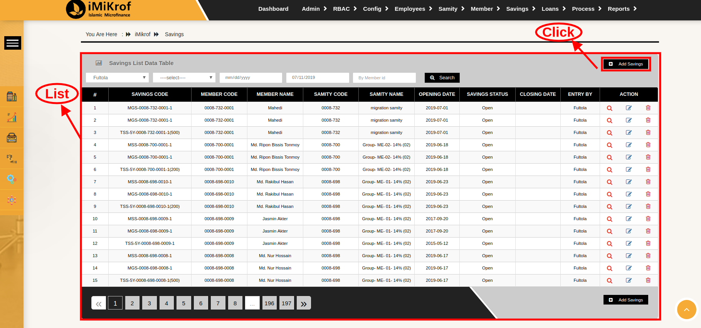টেবিলের বাম পাশে উপরে কোনো নির্দিষ্টতো তথ্য জানতে চাইলে প্রয়োজনীয় তথ্য দিয়ে সার্চ বাটন এ ক্লিক করলে আশারূনুপ ফলাফল দেখতে পাবো ।

টেবিল থেকে চাইলে পূর্বে অ্যাড হওয়া ডাটা থেকে মেম্বার অনুযায়ী আলাদা আলাদা তথ্য দেখতে পাবো ।অর্থাৎ, ভিউ করা যাবে তাছাড়া এডিট,ডিলিট ও করা যাবে । ডাটা অ্যাড কি ভাবে করতে হয় তা জেনে নিয়ে ভিউ,এডিট,ডিলিট সম্পর্কে জেনে নিবো। টেবিলের ডান পাশে উপরে অ্যাড সেভিংস বাটন এ ক্লিক করলে ১টা ফর্ম দেখতে পাবো। ফর্ম থেকে প্রয়োজনীয় তথ্য দিয়ে সেভ বাটন এ ক্লিক করলে
সেভ হয়ে তা সেভিংস এর ডাটা টেবিল এ চলে যাবে। এই ভাবেই শেষ করতে হবে ডাটা অ্যাড করার কাজ।এরপর আসি ডাটা কি ভাবে ভিউ,ডিলিট,এডিট করতে হবে। টেবিলের ডান পাশে ভিউ বাটন,
যদি কোনো মেম্বারের সেভিংস ওপেনের ফুল ইনফরমেশন জানতে চাই তাহলে ভিউ বাটন এ ক্লিক করলে যাবতীয় ইনফরমেশন দেখতে পাবো।
কোনো তথ্য যদি ভুল হয়ে থাকে তাহলে তা ডিলিট করে আবার অ্যাড করবো।
অথবা তা এডিট করে নিবো,এডিট বাটন এ ক্লিক করলে ১টা ফর্ম দেখতে পাবো।
ওই ফর্ম এ সঠিক তথ্য দিয়ে সেভ বাটন এ ক্লিক করবো। এইভাবে শেষ করতে হবে সেভিংস এর কাজ।
কিভাবে সেভিংস উইথড্র নিয়ে কাজ করবো
সেভিংস মডিউলে ক্লিক করলে সেভিংস ফীচার টি দেখতে পাবো।
সেভিংস উইথড্র তে ক্লিক করার সাথে সাথে পূর্বে যেসব সাভিংসের টাকা উইথড্র করা হয়েছে তার ১টা তালিকা দেখতে পাবো।
এখান থেকে আমরা সার্চের কাজ ও করতে পারবো টেবিল এর বাম পাশে উপরে প্রয়োজনীয় তথ্য দিয়ে সার্চ বাটন এ ক্লিক করলে কাঙ্খিত ফলাফল দেখতে পাবো।
টেবিল থেকে আমরা আরো কিছু কাজ করতে পারি নতুন ডাটা অ্যাড করা জেনে নিয়ে টেবিল এর বাকি কাজ গুলা সম্পর্কে জানবো। টেবিল এর ডান পাশের উপরে অ্যাড বাটন দেয়া আছে।
অ্যাড বাটন এ ক্লিক করার সাথে সাথে ১টা ফর্ম দেখতে পাবো।
প্রয়োজনীয় তথ্য দিয়ে ফরম পূরণ করবো । ফর্ম এ সেভিং কোড যখন সিলেক্ট করবো তখন ফর্মের ডান পাশে অটোমেটিক ১টা টেবিল জেনারেট হবে ।
টেবিল থেকে টোটাল ডিপোজিট ,টোটাল উইথড্র এবং বর্তমান ব্যালেন্স জানা যাবে । জেনারেল সেভিংস একাউন্ট একটিভ থাকার জন্য ১০০টাকা একাউন্ট এ রেখে বাকি টাকা উইথড্র করতে পারবে। এরপর সব ইনফরমেশন ঠিক আছে কিনা চেক করে সেভ বাটন এ ক্লিক করবে।
অ্যাড করা ইনফরমেশন সরাসরি সেভিংস উইথড্র টেবিল এ চলে যাবে। যদি অ্যাড করার সময় ভুল হয়ে থাকে তাহলে ওই ইনফরমেশন ডিলিট করে পুনরায় আবার অ্যাড করব। ডিলিট বাটন এ ক্লিক করলে ডিলিট অপারেশন সম্পূর্ণ হবে।
অথবা তা এডিট করে নিবো,এডিট বাটন এ ক্লিক করলে ১টা ফর্ম দেখতে পাবো।
এখান থেকে প্রয়োজনীয় সঠিক তথ্য দিয়ে আপডেট বাটন এ ক্লিক করবো। এইভাবে শেষ করতে হবে সেভিংস উইথড্র আপডেট এর কাজ
যদি একসাথে সব ইনফরমেশন দেখতে চাই তাহলে ভিউ বাটন এ ক্লিক করবো।

ভিউ বাটন এ ক্লিক করলে ১টা টেবিল আসবে ওই টেবিল এ সব ইনফরমেশন একসাথে দেখতে পাবো। এইভাবেই সেভিংস উইথড্র কাজ শেষ হবে।
কিভাবে সেভিংস ডিপোজি নিয়ে কাজ করবো
সেভিংস এ মাউস পয়েন্টার রেখে সেভিংস ডিপোজিট এ ক্লিক করলে সকল মেম্বারদের সেভিংস ডিপোজিট সংক্রান্ত তথ্য চলে আসবে। সেখান থেকে প্রয়োজনে নির্দিষ্ট কোনো গ্রুপ বা কোনো মেম্বারের তথ্য ফিল্টার বা সার্চ করে দেখা যাবে। এবং ডান পাশ্বের অ্যাকশন কলামের ডিলিট বাটনে ক্লিক করে তথ্য ডিলিট করা যাবে। এবং কোনো ভুল থাকলে এডিট বাটনে ক্লিক করে তা সংশোধন করা যাবে।

আর ভিউ বাটনে ক্লিক করে ওই মেম্বারের সেভিং ডিপোজিটের সম্পূর্ণ তথ্য দেখতে পাবে
নতুন কোনো ডিপোজিট অ্যাড করতে চাইলে অ্যাড বাটনে ক্লিক করতে হবে। তারপর একটি ফর্ম আসবে। তা সঠিকভাবে পূরণ করে সেভ বাটনে ক্লিক করলে ডিপোজিট অ্যাড হয়ে যাবে।
কিভাবে সেভিংস স্টেটাস নিয়ে কাজ করবো?
সেভিংস এ মাউস পয়েন্টার রেখে সেভিংস স্টেটাস এ ক্লিক করলে কিছু ইনপুট ফিল্ড আসবে। সেখান থেকে ফিল্টার বা সার্চ করে মেম্বারদের সঞ্চয়ের অবস্থা জানা যাবে।
গ্রুপ বা সমিতি সিলেক্ট করে সার্চ বাটনে ক্লিক করলে ওই সমিতির সকল মেম্বারের সঞ্চয়ের অবস্থা জানা যাবে। অথবা আলাদা ভাবে নির্দিষ্ট কোনো মেম্বারের সঞ্চয়ের অবস্থা জানার জন্য মেম্বার বাই আইডি তে মেম্বারের আইডি টাইপ করে সার্চ বাটনে ক্লিক করলে ওই মেম্বারের সঞ্চয়ের অবস্থা জানা যাবে।
লিস্টের ডান পাশ্বে ভিউ বাটনে ক্লিক করলে সেভিংস এর পুরো ডিটেলস দেখতে পাবে।
কিভাবে সেভিংস ডেথ নিয়ে কাজ করবো
Death Member হচ্ছে কোন একটি সমিতির Member মারা যাওয়ার পরে তা রেজিস্টার করা । কিভাবে Death Member Register এ যাবেন তা নিচে ছবির মাধ্যমে দেখানো হলো.
Death Member Register Click করার পর আমাদেরকে Data Table নিয়ে আসবে ।
এর ডান পাশের উপরে Add নামে একটা বাটন আছে উক্ত বাটনে ক্লিক করলে আমরা Death Member Register ফর্ম এ আসবো।
অতঃপর এই ফর্ম এর মধ্যে আমাদেরকে ব্রাঞ্চ নাম ও মেম্বার নাম এবং মেম্বার এর মারা যাওয়ার তারিখ সিলেক্ট করতে হবে। তারপর Schedule এবং Transaction Stop করে উপরের Saveবাটন ক্লিক করতে হবে।
Data Table a Edit ও Delete নামে দুইটা বাটন আছে , Edit বাটন দিয়ে কোন Death Member তথ্য রিবর্তন করতে পারব এবং Delete বাটন দিয়ে আমরা Death Member এর ডাটা মুছে পেলতে পারব নিচে ছবিতে দেখানো হল। যদি আমরা Death Member Data Table থেকে কোন মেম্বার এর তথ্য প্রয়োজন হয় তাহলে আমরা উক্ত ডাটা টেবিল থেকে বক্স গুলো পূরণ করে সার্চ বাটনে ক্লিক করতে হবে ।
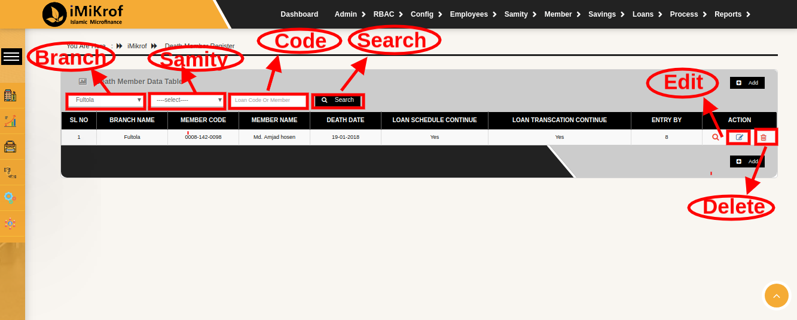কিভাবে রেগুলার লোন একাউন্ট নিয়ে কাজ করবো
রেগুলান লোন একাউন্ট হচ্ছে কোন সমিতির কোন মেম্বার কে যে লোন দেওয়া হয় তার বর্ননা সংক্রান্ত একটি তথ্য তালিকা। যেখানে কোন মেম্বারকে লোন দিতে হলে এড রেগুলার লোন একাউন্ট এ তার তথ্য সমূহ এবং লোন সংক্রান্ত তথ্য সমূহ এড করতে হয়। নিচে কোন মেম্বারের লোন একাউন্ট খোলার ধাপ বর্ননা করা হলো। প্রথমে লোন নামক মডিউলে ক্লিক করলে নিচের চিত্রের মতো অনেক গুলো সাব মডিউল থেকে রেগুলার লোন একাউন্ট নামক অপশানে ক্লিক করলে করতে হবে।

তাহলে নিচের মতো একটি ডাটা টেবিল আসবে।

এখানে সমিতির যেসব মেম্বাররা লোন নিয়েছে এবং যেসব মেম্বারের লোন অনুমোদন হয়েছে তার তালিকা দেখা যাবে। এর পর এই পেজের উপরের ডান পাশে এড রেগুলার লোন একাউন্ট নামক বাটনে ক্লিক করলে নিচের মতো একটি ফরম এর পেজ আসবে।

এই ফরমটি অনেকগুলো অপশান বা হেডলাইন দ্বারা বিভক্ত। মেম্বার ফরম এর প্রথম ভাগ হচ্ছে মেম্বার এন্ড লোন ডিটেইলস এবং লোন কনফিগারেশান। এখানে মেম্বার এন্ড লোন ডিটেইলসের প্রথম ফিল্ডটি হচ্ছে ব্রান্স নেইম । এখানে কোন ব্রান্সের মেম্বার কে লোন দেওয়া হবে তার নাম লিখতে হবে। তার পরের ব্রান্স হচ্ছে মেম্বার নেইম । এখানে মেম্বারের নাম লিখতে হবে। তারপরের ফিল্ড হচ্ছে ডিসবার্সমেন্ট তারিখ । যা ডিফল্ট সেট থাকবে। অর্থাৎ যে তারিখে লোন দেওয়া হবে। তারপরের ফিল্ড হচ্ছে প্রোডাক্ট । এখানে কোন টাইপের লোন দেওয়া হবে তা লিখতে হবে। এর ফলে এর পরের ফিল্ডটি পূরন হয়ে যাবে। তারপরের ফিল্ড গুলো হচ্ছে লোন কনফিগারেশানের । এর প্রথম ফিল্ড হচ্ছে লোন এপ্লিকেশান নাম্বার । এখানে লোন এপ্লিকেশান ফরমের নাম্বারটি লিখতে হবে। তারপরের ফিল্ড হচ্ছে রিপেমেন্ট ফ্রিকোয়েন্সি। লোন এর ইন্সটলমেন্ট গুলো কত দিন পর পর দিবে তা এখানে লিখতে হবে। তারপরের ফিল্ডটি নিজে নিজে পূরন হয়ে যাবে যখন নং অফ রিপেমেন্ট ফিল্ডটি পূরন করা হবে। লোন সাইকেল ফিল্ডটি হচ্ছে ঐ মেম্বারটি মোট কতটি লোন নিয়েছে তার সংখ্যা। লোন এমাউন্ট যেখানে কত লোন দেওয়া হবে তা লিখতে হবে। নং অফ রিপেমেন্ট হচ্ছে মোট কতটি ইন্সটলমেন্ট দিতে হবে তা লিখতে হবে। ইনসুরেন্স এমাউন্টা নিজে নিজে সেট হয়ে যাবে। লোন পারপোজ হচ্ছে কি জন্য লোন নিচ্ছে তা লিখতে হবে এখানে। ফলিও নাম্বার ফিল্ড হচ্ছে এখানে ফলিও নাম্বারটা লিখতে হবে। তারপরের নিচের ফরম টি ক্যাটাগরি হচ্ছে লোন ক্যালকুলেশান এখানকার ফিল্ডগুলো নিজে নিজে পূরন হয়ে যাবে।

শুধুমাত্র ইন্টরেস্ট ডিসকাউন্ট ফিল্ডটি পূরন করতে হবে যদি লোনের উপর কোন ডিসকাউন্ট দেওয়া হয়। তারপরের পেমেন্ট অপশানের মধ্যে টোটাল রিপে এমাউন্ট এবং ইন্টরেস্ট এমাউন্ট নিজে নিজে সেট হয়ে যাবে। ইন্সটলমেন্ট এমাউন্ট যদি রাউন্ড ফিগার না হয় তাহলে রাউন্ড ফিগার করে পূরন করে দিতে হবে।তারপরের ফিল্ড হচ্ছে পেমেন্ট টাইপ যা সিলেক্ট করে দিতে হবে।তারপরের ধাপ হচ্ছে এক্সট্রা লোন ইনফরমেশান । এখানকার সবগুলো ফিল্ড নিজে নিজে পূরন হয়ে যাবে শুধমাত্র নোট ফিল্ড ছাড়া । ঐটা পূরন করতে হবে। তারপরের নিচের চিত্রে বাকি ধাপ গুলো দেওয়া আছে।

শুধুমাত্র ইন্টরেস্ট ডিসকাউন্ট ফিল্ডটি পূরন করতে হবে যদি লোনের উপর কোন ডিসকাউন্ট দেওয়া হয়। তারপরের পেমেন্ট অপশানের মধ্যে টোটাল রিপে এমাউন্ট এবং ইন্টরেস্ট এমাউন্ট নিজে নিজে সেট হয়ে যাবে। ইন্সটলমেন্ট এমাউন্ট যদি রাউন্ড ফিগার না হয় তাহলে রাউন্ড ফিগার করে পূরন করে দিতে হবে।তারপরের ফিল্ড হচ্ছে পেমেন্ট টাইপ যা সিলেক্ট করে দিতে হবে।তারপরের ধাপ হচ্ছে এক্সট্রা লোন ইনফরমেশান । এখানকার সবগুলো ফিল্ড নিজে নিজে পূরন হয়ে যাবে শুধমাত্র নোট ফিল্ড ছাড়া । ঐটা পূরন করতে হবে। তারপরের নিচের চিত্রে বাকি ধাপ গুলো দেওয়া আছে।
গেরান্টোর ডিটেইলস এর মধ্যে গেরান্টর নাম , গেরান্টরের সাথে সম্পর্ক , গেরান্টরের ঠিকানা এবং যোগাযোগের ডিটেইলস লিখতে হবে। তারপর হচ্ছে এমপ্লয়মেন্ট রিলেটেড ইনফরমেশান যা হ্যা বা না সিলেক্ট করে দিতে হবে। তারপরের ধাপ গুলো হচ্ছে ফেমেলি এমপ্লয়মেন্ট এবং আউটসাইড ফেমেলি এমপ্লয়মেন্ট । এইগুলো এনালাইসিস কাজের জন্য ব্যাবহার করা হয় । এখানে ফেমেলির সদস্যদের কাজের তথ্য উল্লেখ করতে হয় যে কত জন পুরুষ এবং কত জন মহিলা কি কি কাজে জড়িত তা লিখতে হয়। এভাবে। সকল তথ্য পূরন হলে নিচের চিত্রের মতো সেইভ বাটনে ক্লিক করে তথ্য সমূহ সংরক্ষন করতে হয়।

তথ্য সংরক্ষিত হলে তা ডাটা টেবিলে দেখাবে। এখানে রেগুলান লোন একাউন্ট অথোরাইজড না হওয়া পর্যন্ত তথ্য সমূহ নিচের চিত্রের মতো এডিট বাটনে ক্লিক করে পরিবর্তন বা এডিট করা যাবে।

আবার অথোরাইজড হওয়া পর্যন্ত তথ্য সমূহ ইচ্ছে করলে ডিলিট করা যাবে নিচের চিত্রের মতো ডিলিট বাটনে ক্লিক করে।

আর কোন তথ্য যদি একবার অথোরাইজড হয়ে যায় তাহলে তা নিচের চিত্রের মতো আর এডিট বা ডিলিট করা যাবে না।

আবার অনেক গুলো তথ্য হতে কোন তথ্য খুজে বের করতে হলে চার্চ ফিল্ডে নির্দিষ্ট কীওয়ার্ড লিখে নিচের মতো চার্চ বাটনে ক্লিক করলে ঐ যদি থাকে তাহলে নিচে চলে আসবে।

এভাবেই কোন মেম্বার কে লোন দিতে হলে তার তথ্য এবং লোন সংক্রান্ত সকল তথ্য লিখে রেগুলার লোন একাউন্ট খুলতে হয় এবং অথোরাইজড হওয়ার আগ পর্যন্ত ডিলিট এবং আপডেট করা যাবে। কিন্তু একবার অথোরাইজড হয়ে গেলে ঐ তথ্য পরিবর্তন বা ডিলিট করা যাবে না।
বিঃদঃ কোন মেম্বারের আগের লোন নেওয়া থাকলে এবং তা সম্পূর্ন পরিশোধ করা না হলে নতুন লোন নেওয়া যাবে না।
কিভাবে রেগুলার লোন ট্রানসাকশান এর কাজ সম্পূর্ণ করতে হবে
লোন মডিউলে ক্লিক করলে রেগুলার লোন ট্রানসাকশানফীচার টি দেখতে পাবো।
রেগুলার লোন ট্রানসাকশান এ ক্লিক করার সাথে সাথে পূর্বে যেসব লোন ট্রানসাকশান হয়েছে তার ১টা তালিকা দেখতে পাবো।
এখান থেকে আমরা সার্চের কাজ ও করতে পারবো টেবিল এর বাম পাশে উপরে প্রয়োজনীয় তথ্য দিয়ে সার্চ বাটন এ ক্লিক করলে কাঙ্খিত ফলাফল দেখতে পাবো।
টেবিল থেকে আমরা আরো কিছু কাজ করতে পারি নতুন ডাটা অ্যাড করা জেনে নিয়ে টেবিল এর বাকি কাজ গুলা সম্পর্কে জানবো। টেবিল এর ডান পাশের উপরে অ্যাড বাটন দেয়া আছে।
অ্যাড বাটন এ ক্লিক করার সাথে সাথে ১টা ফর্ম দেখতে পাবো।
প্রয়োজনীয় তথ্য দিয়ে ফরম পূরণ করবো । লোন সিলেক্ট করার সাথে সাথে অটোমেটিক ১টা টেবিল জেনারেট হবে ফর্মের ডান পাশে। কত টাকা লোন এবং কত টাকা অ্যাডভান্স করা হয়েছে এই টেবিল থেকে দেখতে পাবো।
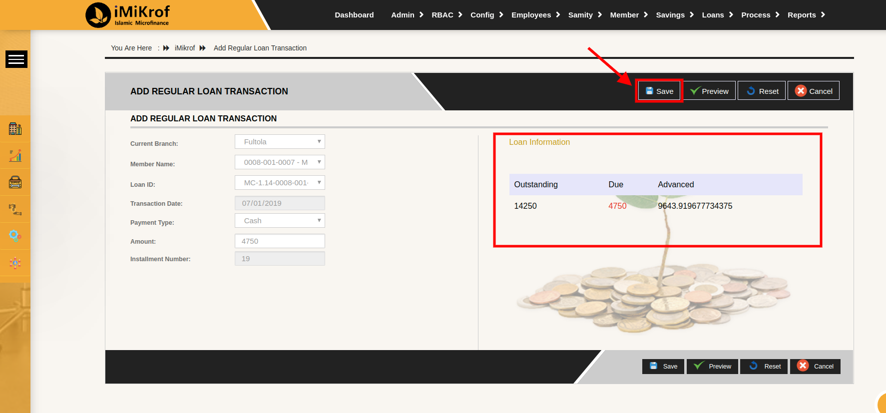এরপর সব ইনফরমেশন ঠিক আছে কিনা চেক করে সেভ বাটন এ ক্লিক করবে।
অ্যাড করা ইনফরমেশন সরাসরি রেগুলার লোন ট্রানসাকশান টেবিল এ চলে যাবে। যদি অ্যাড করার সময় ভুল হয়ে থাকে তাহলে ওই ইনফরমেশন ডিলিট করে পুনরায় আবার অ্যাড করব। ডিলিট বাটন এ ক্লিক করলে ডিলিট অপারেশন সম্পূর্ণ হবে।
অথবা তা এডিট করে নিবো,এডিট বাটন এ ক্লিক করলে ১টা ফর্ম দেখতে পাবো।
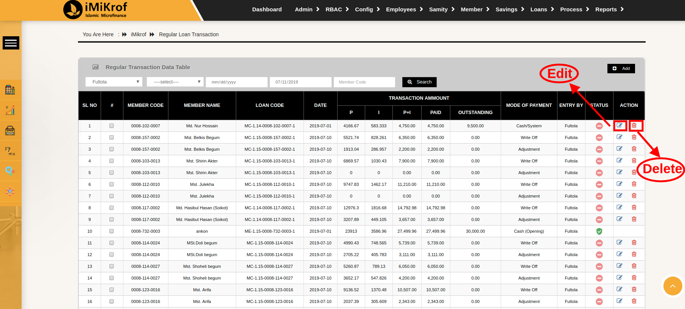এখান থেকে প্রয়োজনীয় সঠিক তথ্য দিয়ে আপডেট বাটন এ ক্লিক করবো। এইভাবে শেষ করতে হবে রেগুলার লোন ট্রানসাকশান আপডেট এর কাজ।
অ্যাড করা ইনফরমেশন সরাসরি রেগুলার লোন ট্রানসাকশান টেবিল এ চলে যাবে। যদি অ্যাড করার সময় ভুল হয়ে থাকে তাহলে ওই ইনফরমেশন ডিলিট করে পুনরায় আবার অ্যাড করব। ডিলিট বাটন এ ক্লিক করলে ডিলিট অপারেশন সম্পূর্ণ হবে।
এইভাবে রেগুলার লোন ট্রানসাকশান শেষ করতে হবে
কিভাবে লোন স্টেটাস নিয়ে কাজ করবো
Loans মডিউলে এর ভিতর Loan status নামে একটি সাব মডিল আছে।যেখানে সমিতির অধীনস্ত কোন সদস্যর লোনের লেনদেন সম্পর্কিত সকল তথ্য জমা থাকে এবং প্রোয়জনে তথ্য যাচাই করা যায়।
Loan status এ ক্লিক করলে একটি টেবিল প্রদর্শিত হবে।উক্ত টেবিলে সদস্যাদের ব্রাঞ্চ এর নাম,সমিতির নাম,লোন এর ধরন,ইন্টারেস্ট এবং তারিখ সিলেক্ট করে Search বাটনে ক্লিক করে সদস্যদের লোন সম্পর্কিত তথ্য যাচাই করা যায়।
এবং চাইলে কোন নির্দিষ্ট সদস্যর লোন এর স্ট্যটাস যাচাই করা যায়।সে ক্ষেত্রে সমিতির নাম ,লোনের ধরন এবং মেম্বার কোড লিখে উক্ত সদস্যর লোন সম্পর্কির তথ্য যাচাই করা যায়।
Search বাটনে ক্লিক করার পর লোন স্ট্যটাস টেবিল প্রদর্শিত হবে।
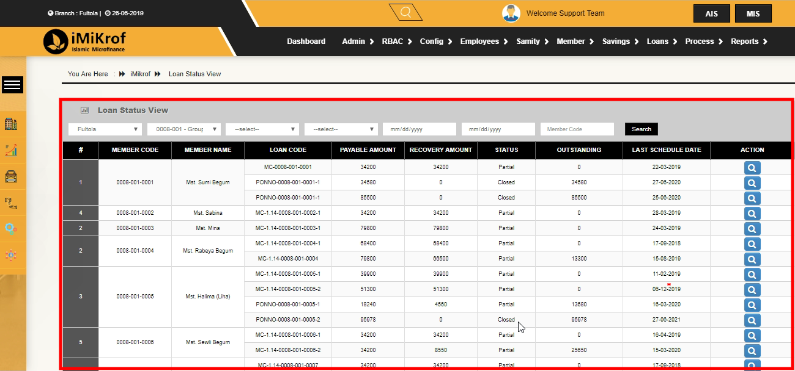Loan status টেবিলে একটি Action কলামে একটি আইকন আছে। উক্ত সার্চ আইকনে ক্লিক করে কোন সদস্যর লোনের লেনদেন সম্পর্কিত তথ্য জমা থাকে, অর্থাৎ সদস্য কত তারিখে কত লোনের কত টাকা পরিষোধ করেছে,এবং কোন মাসের টাকা বাকি আছে কিনা তা যাচাই করা যায়।
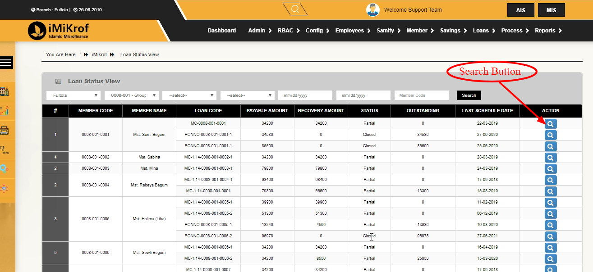যদি সদস্য কোন মাসের কিংবা কোন সাপ্তাহের টাকা বাকি থাকে তাহলে লেখা লাল রঙের হবে এবং উক্ত মাসের বা সাপ্তাহের টাকাপরের মাসের বা সাপ্তাহর সাথে যোগ হয়ে যাবে।
আর যদি কোন মাসের বা সাপ্তাহের টাকা পরিষোধ করে থাকে তহলে STATUS ADV /DUE কলামের OK লেখা থাকবে অর্থাৎ উক্ত সদস্যর ওই মাসের বা সাপ্তাহের কোন টাকা বাকি নাই।
আর কোন সদস্য যদি সাপ্তাহিক কিংবা মাসিক কিস্তি অগ্রীম জমা দিয়ে থাকে তবে তা Advance Payment কলামে যুক্ত হবে।
কোন সদস্য মাস বা সাপ্তাহে কত টাকা জমা দিয়েছে তা Actual Payment এ জমা হয়।
আর সদস্যর প্রতিমাসের বা সাপ্তাহের কিস্তি দেওয়ার পর মোট লন থেকে কত টাকা বাকি আছে তা Loan Outstanding Amount এ দেখা যাবে।
সদস্য কত তারিখে ইনস্টলমেন্ট এর টাকা পরিষোধ করেছে তা উক্ত ফিল্ডে প্রদর্শিত হয়ে থাকে।
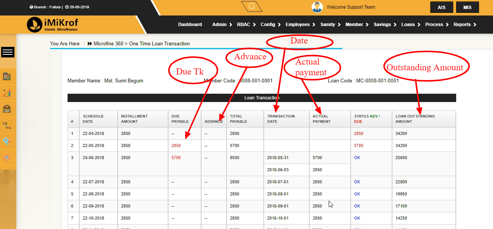এরপর সর্বশেষে Total নামে একটি ফিল্ড আছে,যেখানে মোট ইনস্টলমেন্ট/কিস্তির টাকা , এরপর কত টাকা জমা দেওয়া হয়েছে এবং কত টাকা বাকি আছে তার ফলাফল সংগ্রহ করা যায়।
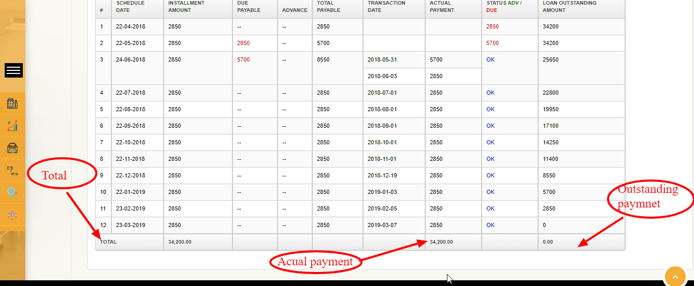কিভাবে লোন রেবেটস নিয়ে কাজ করবো
যদি কোন সদস্য Outstanding এর টাকা মেয়াদ উত্তীর্ন হওয়ার পূর্বে ,ইন্সটলমেন্টের টাকা অগ্রিম প্রদানের মাধ্যমে ঋন পরিষোধ করলে উক্ত সময় শুধুমাত্র সার্ভিস চার্জের উপর থেকে যে পরিমান টাকা ছাড় দেওয়া হয় ,সেটাই হলো লোন রেবিটস।
Loan মডিউল এর Loan Rebates এ ক্লিক করার পর একটি টেবিল প্রদর্শিত হবে,উক্ত টেবিলে কোন কোন সদস্যদের ঋনের সার্ভিস চার্জ ছাড় দেওয়া হয়েছে তাদের তথ্য সংগ্রহ করা হয়ে থাকে।
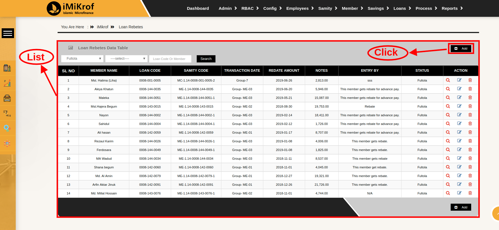আর যদি নতুন কোন সদস্যর ঋনের সার্ভিস চার্জ ছাড় দেওয়ার প্রোয়জন হয়,তা হলে টেবিলের ADD বাটনে ক্লিক করতে হবে।Add বাটনে ক্লিক করার পর একটি ফর্ম আসবে ।
উক্ত ফর্মে ব্রাঞ্চ এর নাম সফটওয়্যার কর্তৃক সিলেক্ট করা থাকে।এরপর সদস্য নির্ধারন করতে হবে,সদস্য নির্ধারন করার পর লোনের আইডি ঠিক করতে হবে। লোন আইডি ঠিক করলে সদস্যর লোনের সার্ভিস চার্জ আসবে এরপর সদস্যকে সার্ভিস চার্জের উপর কত টাকা ছাড় দিবে তা Rebates Amountএ ঠিক করতে হবে ।
সদস্যর নাম এবং লোন আইডি ঠিক করার পর ফর্মে পাশে একটি টেবিল প্রদর্শিত হয় ,যেখানে উক্ত সদস্যর ঋনের আর্থিক লেনদেনের সকল তথ্য দেখানো হয়।
ফর্ম পূরন করে Save বাটনে ক্লিক করে ডাটা সেভ করতে হবে ।
Save করা তথ্য লোন Loan Rebates টেবিলে যুক্ত হয়। Loan Rebate টেবিল থেকে কোন সমিতির বা নির্দিষ্ট কোন সদস্যর তথ্য Search বাটনে ক্লিক করে যাচাই এ করা যায়।
অথবা আমরা চাইলে কোন একজন নির্দিষ্ট ব্যাক্তির ঋনের যাবতীয় লেনদেন,অর্থাৎ কত তারিখের কোন মাসে কি পরিমান অর্থ পরিষোধ করেছে,আরও কত টাকা পরিষোধ করতে হবে এবং কত তারিখের মধ্য করতে হবে তা যাচাই করতে পারি টেবিলে থাকা Search আইকন টি ক্লিক করে।
কিভাবে অটো প্রসেস(Auto Process) নিয়ে কাজ করবো?
অটো প্রসেস(Auto Process) হচ্ছে এমন একটি প্রসেস যেখান থেকে কোন সমিতির সকল সদস্যের হাজিরা এবং কিস্তি বা ইনস্টলমেন্ট সহ সেভিংস বা সঞ্চয়ের টাকা ও একসাথে জমা নেওয়া যায়। নিচে অটো প্রসেস(Auto Process) দেখানো হলো।প্রথমে প্রসেস নামক মডিউলকে সিলেক্ট করলে নিচের মতো কতগুলো সাব মডিউল বা অপশন আসে।

এখান থেকে অটো প্রসেস(Auto Process) নামক অপশনে ক্লিক করতে হবে।তাহলে নিচের চিত্রের মতো একটি ডাটা টেবিল আসবে যেখানে একটি ব্রাঞ্চের মধ্যে যত ব্রাঞ্চ আছে সবগুলো তালিকা আকারে আসবে।
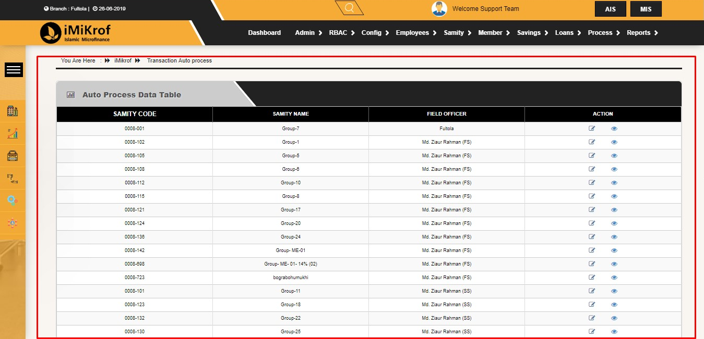নির্দিষ্ট কোনো সমিতির মেম্বারদের সকল সদস্যের হাজিরা এবং কিস্তি বা ইনস্টলমেন্ট সহ সেভিংস বা সঞ্চয়ের টাকা একসাথে দেখতে চাইলে ছবিতে সিলেক্ট করা বাটন এ অথবা ভিউ বাটন এ ক্লিক করতে হবে
তাহলে নিচের চিত্রের মতো সমিতির মেম্বারদের তথ্য, তাদের লোন এবং সেভিংস সম্পর্কিত তথ্য সমূহ দেখা যাবে।
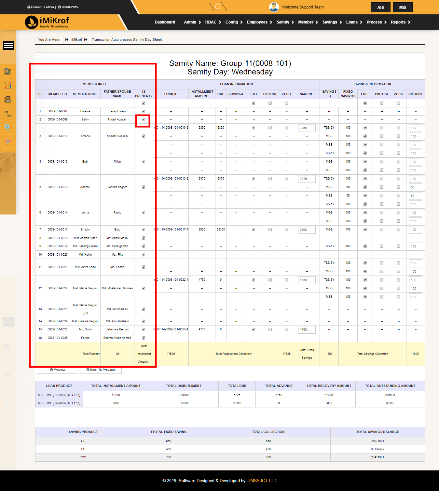যা তিন ভাগে ভাগ করা । প্রথম ভাগ বা অংশ হচ্ছে মেম্বর ইনফরমেশন এখানে সমিতির মেম্বারদের মেম্বার আইডি, মেম্বার নাম এবং মেম্বারের পিতার নাম বা তাদের স্বামী বা স্ত্রীর নাম উল্লেখ করা থাকবে। এবং এর পাশে হাজিরার অপশন থাকবে। যদি কোন মেম্বার অনুপস্থিত থাকে তাহলে তার হাজিরার অপশন কে আনচেক করে দিতে হবে।
তার পরের অংশ হচ্ছে লোন ইনফরমেশন । যা নিচের চিত্রে দেখানো হয়েছে।
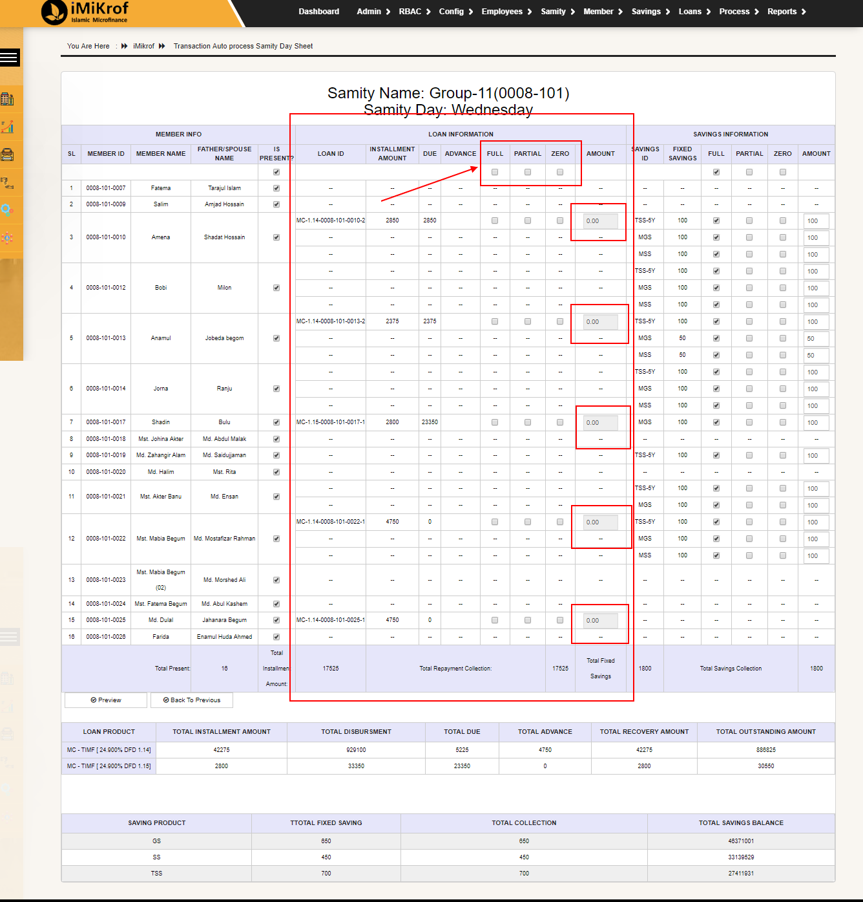এখানে একজন মেম্বারের যে যে লোন চালু আছে এবং তার চলতি সময়ের লোন ইন্সটলমেন্ট বা কিস্তি দেওয়ার আছে তার ইনফরমেশন আসবে। যদি চলতি কিস্তি দেওয়া হয়ে থাকে তাহলে কোন তথ্য দেখাবে না এখানে। এখন যাদের লোন ইনফরমেশন আসছে তাদের ইনস্টলমেন্ট দিতে হলে প্রথমে চিত্রের মতো করে সবগুলো বক্স আনচেক করে দিতে হবে। তাহলে চিত্রের মতো এমাউন্ট এর সকল খালি জায়গায় 0 দেখা যাবে। এরপর নিচের চিত্রের মতো যার ইনস্টলমেন্ট বা কিস্তি নেওয়া হবে তার ফুল(FULL) নামক কলামের বক্সে চেক দিতে হবে।
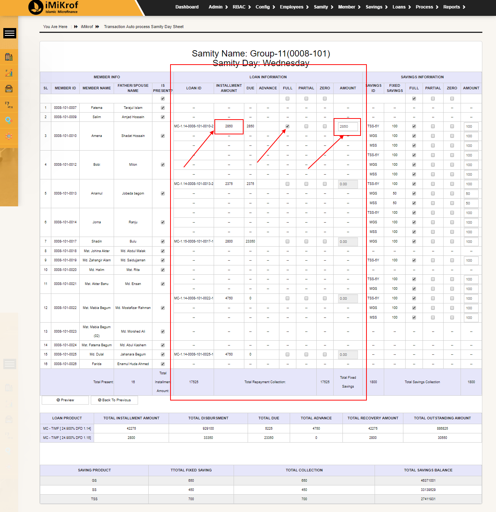তাহলে চিত্রের মতো ইনস্টলমেন্ট এমাউন্ট এ যে এমাউন্ট থাকে তা এমাউন্ট নামক ফিল্ডে চলে আসে। অর্থাৎ মেম্বার যখন ফুল(FULL) ইন্সটলমেন্ট পরিশোধ করে তথন এই বক্সে চেক দেওয়া হবে। আবার যদি কোন মেম্বার তার কিস্তির সম্পূর্ন টাকা দিতে না পারে এবং কিস্তির টাকা থেকে কম দিতে চায় তখন নিচের তথ্যের মতো পারশিয়াল নামক বক্সে চেক দিতে হবে তা হলে এমাউন্ট নামক ফিল্ডটি লেখার মতো অবস্থায় আসবে।
এবং এখানে এমাউন্ট লিখে দিতে হবে। আবার কেউ যদি কোন কিস্তি বা ইন্সটলমেন্ট না দেয় তখন তার এমাউন্ট নামক ফিল্ডটি 0.00 এই অবস্থায় রাখতে হবে। তবে কোন অবস্থায় ব্লাংক বা খালি রাখা যাবে না। এভাবে সব গুলো মেম্বারের লোন ইনফরমেশন লিখতে হবে।
এরপরের অংশ হচ্ছে সেভিংস বা সঞ্চয়ের ইনফরমেশন । যা নিচে চিত্রের মধ্যে দেখানো হলো।
এখানে ঠিক আগের অংশের মতোই ধাপ গুলো অনুসরন করতে হবে। প্রথমে সবগুলো চেক বক্স আনচেক করতে হবে। এবং সবগুলো এমাউন্ট বক্সে 0.00 এই লেখা আসবে। এখন যে মেম্বার সঞ্চয়ের ফুল(FUll) টাকা দিবে তার ফুল চেক বক্সে চেক দিতে হবে। এবং যে পুরো টাকা দিবে না তার পারশিয়াল নামক চেক বক্সে চেক দিতে হবে। আবার যদি কোন মেম্বার কোন টাকাই জমা না দেয় তখন সবগুলো চেক বক্স আনচেক করতে হবে। এবং অবশ্যই এমাউন্ট ফিল্ড 0.00 হতে হবে এবং খালি হতে পারবে না।
এভাবে সবগুলো মেম্বারের তথ্য , তাদের লোনের তথ্য এবং তাদের সঞ্চয়ের তথ্য সমূহ পূরন করা হবে তখন নিচের চিত্রের মতো প্রিভিউ নামক বাটনে ক্লিক করতে হবে।
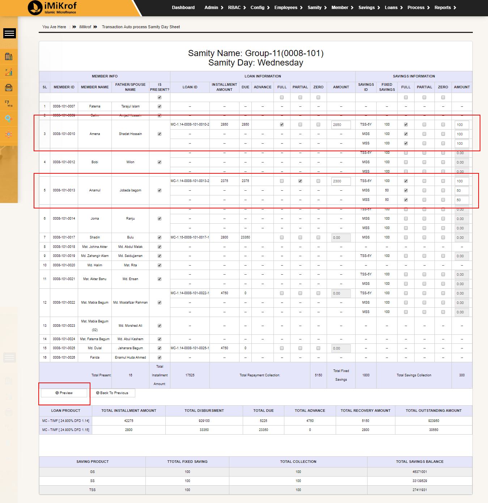তাহলে নিচের চিত্রের মতো প্রিভিউ বাটনটি সেভ নামক বাটনে পরিনত হবে এবং এতে ক্লিক করতে হবে।

তাহলে যেসব মেম্বারদের তথ্য পূরন করে সেভ করা হয়েছে তাদের তথ্য সমূহ নিচের চিত্রের মতো চলে আসবে।
অর্থাৎ এই সমিতি ডে তাদের লেনদেন সম্পূর্ন হয়েছে।
এখন যদি ডাটা অ্যাড করার সময় কোনো ইনফরমেশন ভুল হয়ে যায় তাহলে তা এডিট করে নিতে হবে। নিচের ছবিতে সিলেক্ট করা বাটনে অথবা এডিট বাটনে ক্লিক করতে হবে।

এডিট বাটন এ ক্লিক করলে নিচের ছবির ন্যায় টেবিল আসবে।এখন ভুল হওয়া ইনফরমেশন ঠিক করে নিতে হবে এরপরের কাজ অ্যাড এর ন্যায়।

এভাবেই অটো প্রসেসের মাধ্যমে সমিতির সদস্যদের হাজিরা, ঋন এর কিস্তি এবং সঞ্চয়ের টাকা একসাথে পরিশোধ করা যায়।
রিপোর্ট
একটি প্রতিষ্ঠানের রিপোর্ট সমূহকে ভিন্ন ভিন্ন ভাগে ভাগ করা হয়ে থাকে নিম্নে রিপোর্ট সমূহ আলচনা করা হল
Member মডিউলের ভিতর Member Attendance Report এ ক্লিক করলে একটি পৃষ্ঠা প্রদর্শিত হবে।উক্ত পৃষ্ঠায় ৩টি ফিল্ড আছে ,যথাক্রমে ব্রাঞ্চ,সমিতির নাম এবং তারিখ।
1:pksf pomis 1 reports : palli karma sahayak foundation 2:Mra reports :micrecaitd regulatory authority 3:Regular and general report (Branch level) 4.1 Register report(branch level)পরিশেষে আমরা বলতে পারি যে আমাদের সফটয়ারটি ব্যবহারের ফলে তথ্যগুলো যেমন সুসংগঠিত অবস্থায় থাকবে এবং ভুল ভ্ৰান্তি সনাক্ত হবে তেমনি ,দ্রততার সাথে কালেকশনশিট প্রিন্ট লেজার কর্মীদের সাপ্তাহিক রিপোর্ট সীটে সদস্যদের নাম, ট্রান্সপার,মাসিক রিপোর্ট সহ বহুবিদি সুবিধা পাওয়া যাবে এচাড়াও (এস কে এফ )ও (এম আর এ )এর চাহিদা অনুযায়ী সকল ধরণের রিপোর্ট সহ রিয়েল টাইম তথ্য সঠিক ভাবে পাওয়া যাবে এবং তথ্য গুলো সমন্বিত করা সম্বভ হবে ফলশূতিতে হ্মুদ্রঋণ কার্যক্রমে নিয়োজিত প্রতিষ্ঠানসমূহের সুশাসন ও শৃঙ্খলা প্রতিষ্ঠিত হবে